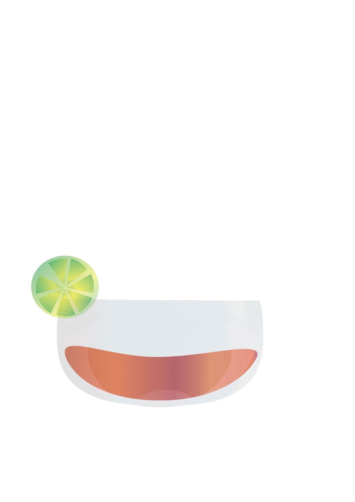
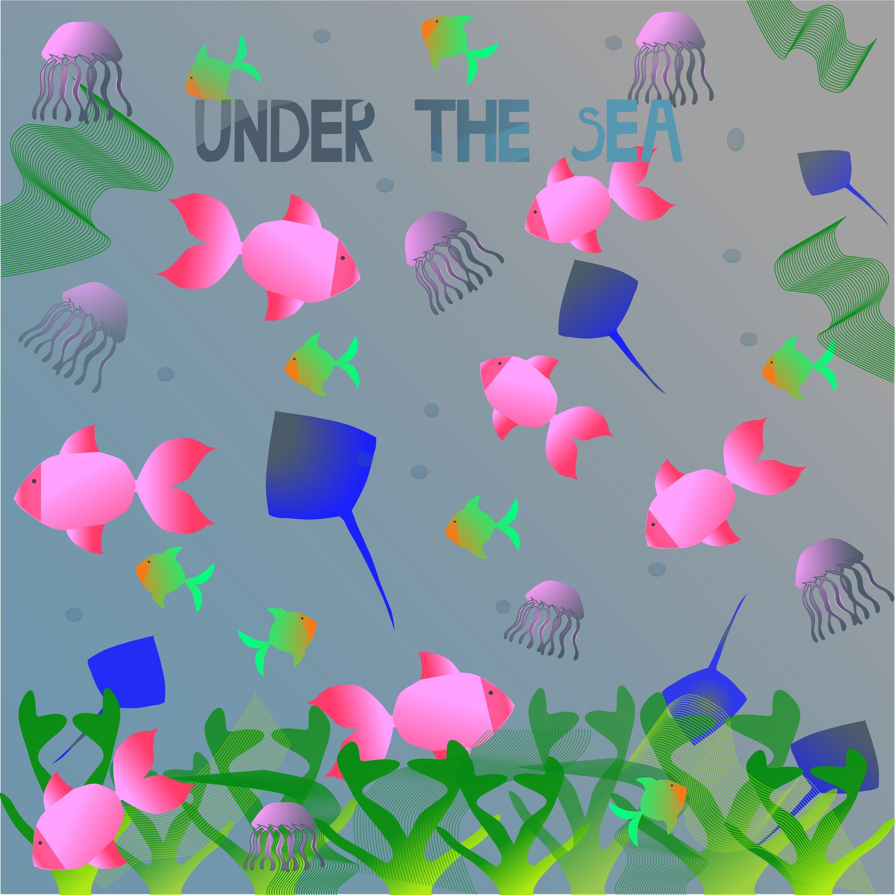
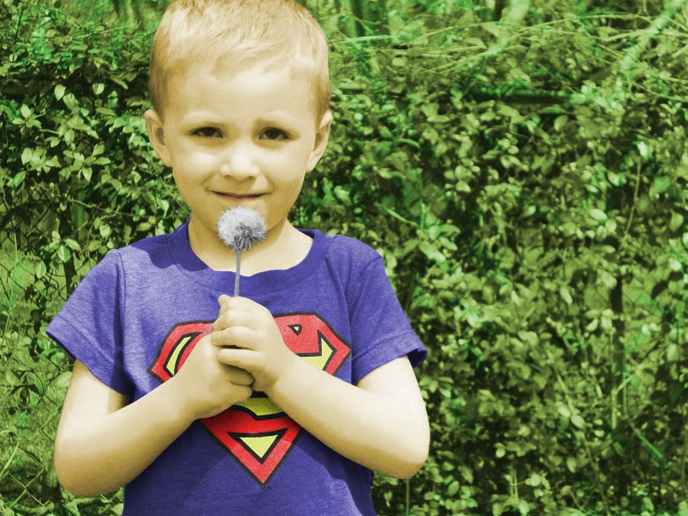
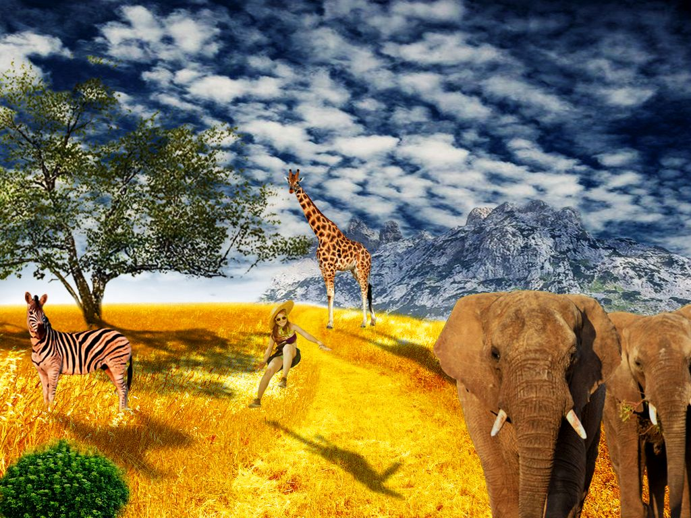
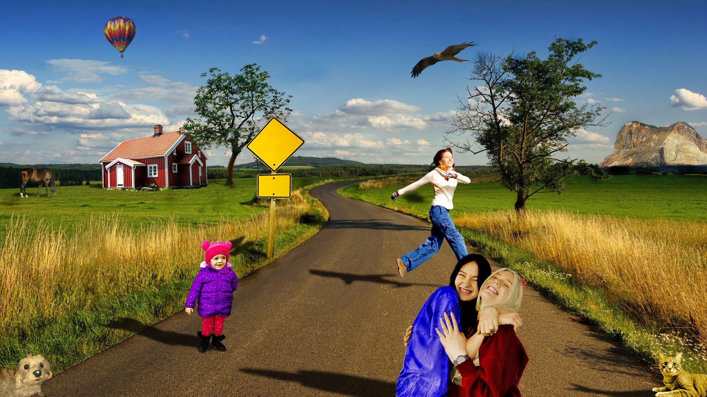

Adobe Illustrator -definiranje swatch boja u RGB, CMYK, HSB sustavima boja, transparencija (Opacity),crtanje zatvorenih objekata, multipliciranje i transformacije (rotacija, zrcaljenje, skaliranje),rad sa slojevima (Layers); grupiranje objekata, apliciranje swatch boja na objekte
U vježbi se obrađuje tema izrade složenih objekata koji se sastoje od više staza metodama spajanja (Unite/Compound path) ili oduzimanja oblika (Difference/Subtract).Apliciranje različitih vrsta gradijenata (linearni, radijalni, mesh) od dvije ili više boja. Transparencija i poredak slojeva u izradi složene grafike.
U projektnom zadatku kombinirane su sve priješnje vježbe.
U ovoj vježbi koristimo tehnike digitalnog retuširanja fotografija za postizanje realističnog efekta: selekcije (Lasso Tool), uklanjanje nedostataka na slici pomoću Dust&Scratches, Median,Clone Stamp, Heal,Burn/Dodge brush, Levels, Brightness/Contrast
U vježbi prolazimo kroz tehnike neinvazivnog koloriranja slike koje se može primijeniti na crno-bijele slike ili slike u boji kojima želimo promijeniti nijansu određenih područja. Selekcijom željenih dijelova slike stvaramo maske kojima skrivamo ili otkrivamo efekte kolorizacije.
U ovoj vježbi prolazimo kroz različite tehnike selektiranja jednostavnih i složenih oblika. Jednostavne tehnike selekcije uključuju alate kojima selektiramo poligone i oštre rubove objekata, a složenije tehnike selekcije podrazumijevaju selekciju putem kanala slike ili crtanje maski brush i eraser alatima u modu quick mask.
U projektnom zadatku korištene su tehnike naučene u prijašnjim vježbama ukomponirane u jedan rad.

U ovom setu vježbi naučili smo izraditi kinemagraf,video isječak čija se sekvenca ponavlja u beskonačnost, najčešće u GIF formatu, a u kompoziciji spaja pokretnu i statičnu grafiku (sliku i video). Dok je većina grafike statična, samo mali dio je animiran (pokretan).U drugom dijelu naučili smo rezati i spajati video isječake iz više izvora, dodati video efekte...